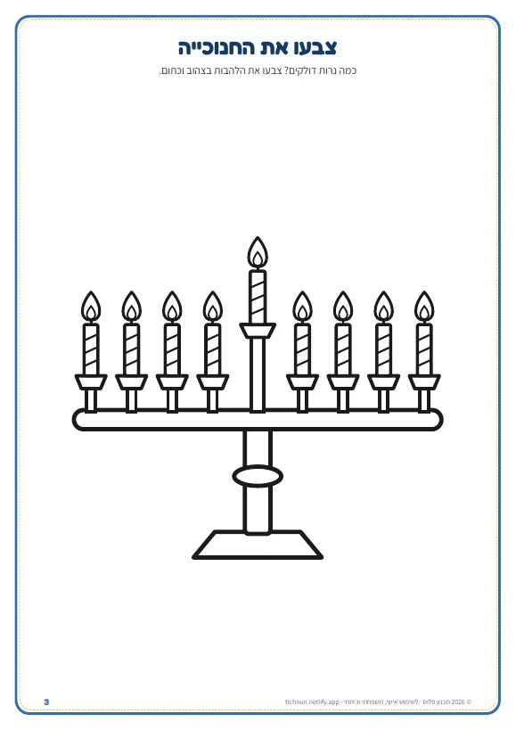
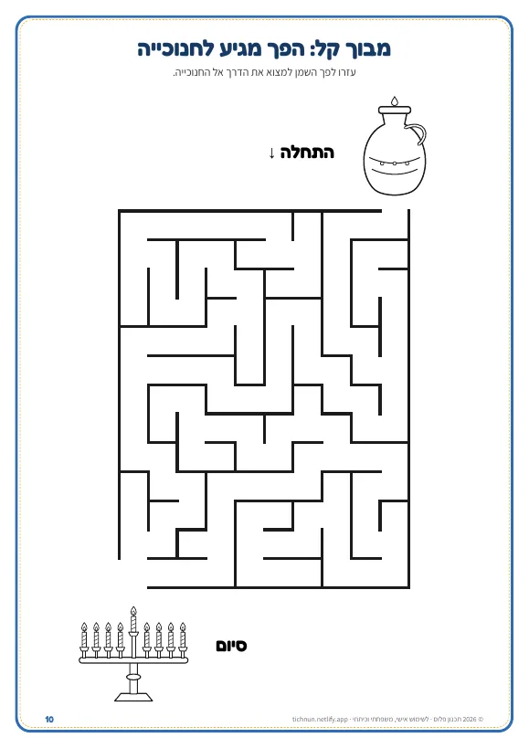
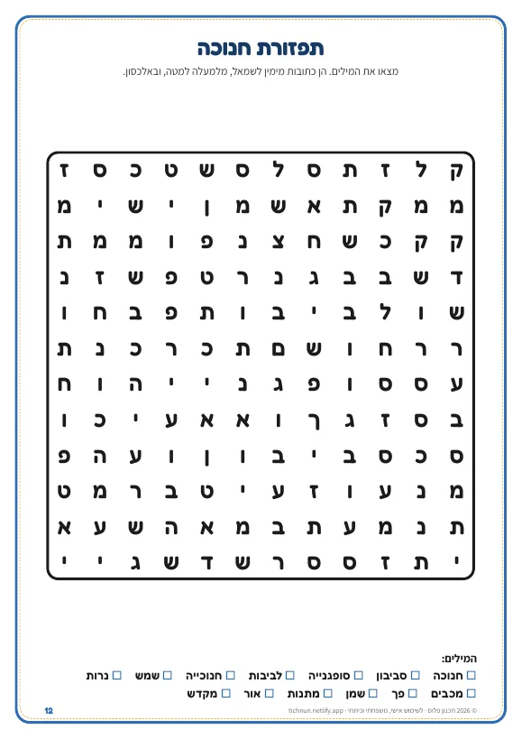
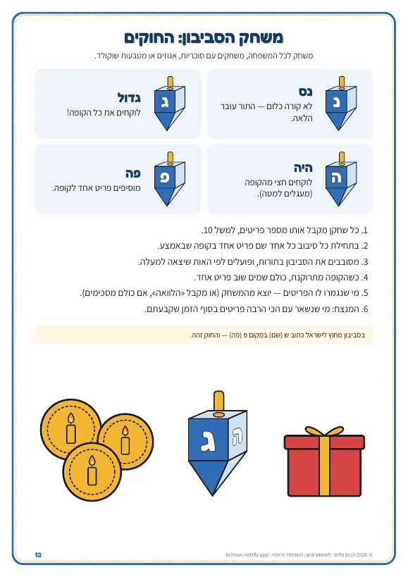
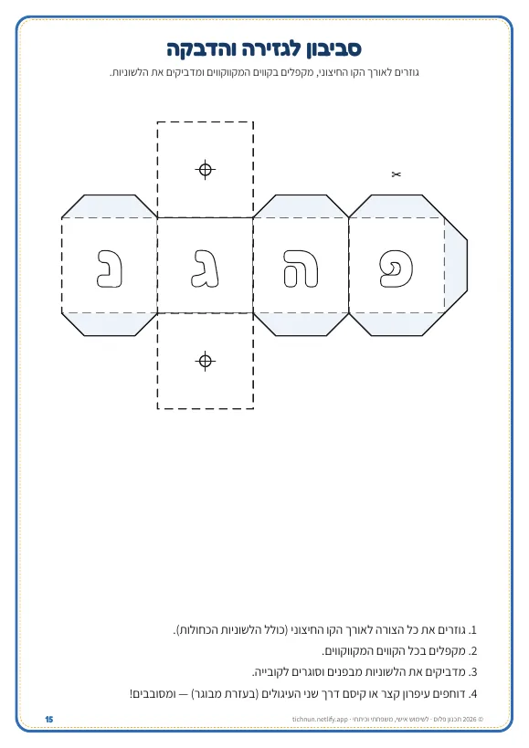
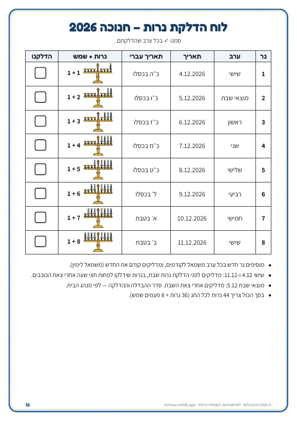
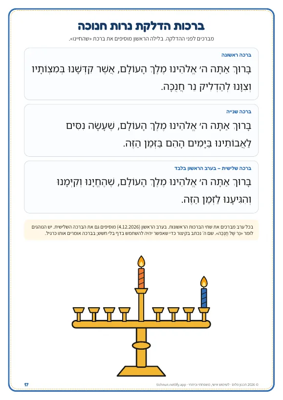

חבילת פעילויות לחנוכה 2026 – דפי צביעה ומשחקים להדפסה
20 עמודים מוכנים להדפסה לילדים: דפי צביעה לחנוכה, מבוכים, תפזורת, משחק סביבון עם דף ניקוד, סביבון לגזירה, לוח הדלקת נרות לחנוכה 2026 וברכות בניקוד.
- 20 עמודים, PDF בגודל A4
- איורים מקוריים, קווים עבים ונקיים
- גילאי 4–10
- מדפיסים כמה שרוצים
- הורדה מיידית
רוצים גם לתכנן את המסיבה? בחבילת החנוכה מקבלים את הפעילויות + מתכנן המסיבה ב-₪29 במקום ₪38.
הצצה לעמודים
צילומים מהקובץ עצמו.








מה יש בחבילה
5 דפי צביעה
חנוכייה, סביבונים, סופגנייה ולביבות, חנוכייה בחלון ופך השמן — עם משפט קצר על החג בכל דף.
משחקי חשיבה
מבוך קל ומבוך מאתגר, תפזורת עם 13 מילים, צביעה לפי מספרים ודף «כמה נרות?» לספירה.
משחק הסביבון
חוקים פשוטים עם איור לכל אות (נ, ג, ה, פ), דף ניקוד ל-5 שחקנים וסביבון נייר לגזירה.
לוח הדלקה 2026
שמונה הלילות עם תאריך לועזי ועברי, כמה נרות בכל ערב, והערות לשישי ולמוצאי שבת.
ברכות בניקוד
שלוש ברכות ההדלקה באותיות גדולות, להניח ליד החנוכייה.
מעשים טובים וברכות
לוח «8 לילות של מעשים טובים», שתי ברכות לחג לגזירה, ודף פתרונות להורים.
שאלות נפוצות
לאיזה גיל זה מתאים?
לילדים בגילאי 4 עד 10. יש דפי צביעה פשוטים לקטנים, מבוך קל ומבוך מאתגר, תפזורת ודף «כמה נרות?» לתרגול ספירה.
כמה פעמים אפשר להדפיס?
כמה שרוצים, לשימוש אישי, משפחתי וכיתתי (גננות ומורות מוזמנות להדפיס לכל הכיתה). לא למכירה חוזרת או להפצה ברשת.
באיזה גודל הדפים?
קובץ PDF אחד בגודל A4, 20 עמודים, באיכות וקטורית — הקווים חדים גם בהדפסה ביתית רגילה.
הברכות כתובות בניקוד?
כן. שלוש ברכות הדלקת הנרות בניקוד מלא, בגופן גדול וברור. את השם כתבנו בקיצור (ה׳) כדי שאפשר יהיה להשתמש בדף בלי חשש.
התאריכים נכונים ל-2026?
כן. נר ראשון ביום שישי 4.12.2026 בערב, ונר שמיני בשישי 11.12.2026. לוח ההדלקה כולל תאריך לועזי ועברי לכל ערב.
איך מקבלים את הקובץ?
מיד אחרי התשלום ב-PayPal (אפשר גם בכרטיס אשראי, בלי חשבון) נפתח דף הורדה עם הקובץ.
עוד לחנוכה
- פעילויות לחנוכה לילדים: רעיונות לבית ולגן
- חנוכה 2026: מתי מדליקים, ברכות וסדר ההדלקה
- מחשבון: כמה סופגניות ולביבות צריך?
- מתכנן מסיבת חנוכה באקסל